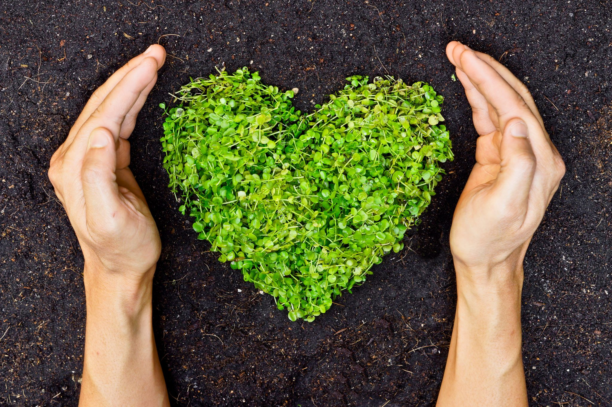

You can help support the implementation of these two goals in many ways
whether by yourself as an individual or within an organization.
Some great ways that you can help out include:
1. Being mindful of your consumption of daily goods.
2. Helping keep our planet clean by re-using, re-cycling, and reducing your consumption.
3. Not wasting water, and conserving it.
As an individual, pretty much any environmentally friendly action you take will make a positive impact.

You can also choose to contribute by being part of an organization.
You can find some local environmental organizations to be a part of which are close to you so you can make a direct impact.
If you are willing to take the extra step, you can also become a part of bigger organizations.
You can volunteer at local organizations, and help coordinate events. All of this will impact the communinity in a positive way.
If you want to make sure that you are directly choosing to help out an organization which focuses on sustainability.
Some examples include:
1. Greenpeace
2. The David Suzuki Foundation
Both of these organizations do very good work, and it is worth checking them out.